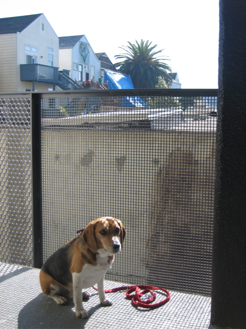

<--Previous Up Next-->

Freeway heart
Jeanne Halpern's hike end-to-end on 24th Street included a tour of a condominum complex in a renovated building on Minnesota Street betwen 20th and 22nd Streets. While there we got this chance to take a picture with a heart which we can usually only see from Interstate 280 on the way to dog day care.